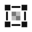

<!doctype html><meta charset="utf-8"><meta name="viewport" content="width=device-width,initial-scale=1"><title>LIZARD</title><link rel="icon" href="icon.svg" type="image/svg+xml">
<link rel="preload" href="../liblizard/vendor/fonts/inter/InterVariable.woff2" as="font" type="font/woff2" crossorigin><link rel="stylesheet" href="ui.css">
<style>
  /* ai: Home (2026-10-01): the tips, Send and Receive, the received
     files (lizard-web/library.mjs) and Settings. One column, the same at every size. */
  main{max-width:34rem;margin:0 auto;padding:0 16px 2rem}
  .go{display:grid;grid-template-columns:1fr 1fr;gap:12px;margin:16px 0 8px}
  .go .btn{flex-direction:column;align-items:flex-start;justify-content:flex-start;gap:2px;min-height:120px;padding:16px;
    border-radius:16px;text-align:left;font-size:18px}
  .go .btn svg{margin-bottom:10px}
  .go .btn small{font-weight:400;font-size:14px;line-height:1.35;color:var(--muted)}
  .go .primary small{color:rgba(255,255,255,.72)}
</style>
<main>
  <header class="bar"><span class="brand"><span>LIZARD</span></span><span class="grow"></span></header>
  <div class="tip" id="tips" hidden><svg class="i" viewBox="0 0 24 24" aria-hidden="true"><circle cx="12" cy="12" r="10"/><path d="M12 16v-4M12 8h.01"/></svg><div>
    <p><strong>Send a file from one screen to another device's camera.</strong></p>
    <ol><li>On the computer, open LIZARD, choose Send and pick a file.</li><li>On the phone, open LIZARD and choose Receive.</li><li>Point the phone at the code until the file arrives. It is kept here.</li></ol>
    <p><a href="https://www.youtube.com/watch?v=F-Mie4m9gBQ">An example on video</a></p>
    <button type="button" class="text" data-got>Got it</button>
  </div></div>
  <div class="go"><a id="send" class="btn" href="send.html"><svg class="i" viewBox="0 0 24 24" aria-hidden="true"><rect x="2" y="3" width="20" height="14" rx="2"/><path d="M8 21h8M12 17v4"/></svg>Send<small>Show a file as a code on this screen</small></a><a id="recv" class="btn" href="recv.html?auto"><svg class="i" viewBox="0 0 24 24" aria-hidden="true"><path d="M23 19a2 2 0 0 1-2 2H3a2 2 0 0 1-2-2V8a2 2 0 0 1 2-2h4l2-3h6l2 3h4a2 2 0 0 1 2 2z"/><circle cx="12" cy="13" r="4"/></svg>Receive<small>Read a code with this device's camera</small></a></div>
  <section id="files" aria-labelledby="files-h"><h2 id="files-h">Received files</h2>
    <div id="empty" class="empty"><svg class="i" viewBox="0 0 24 24" aria-hidden="true"><path d="M14 2H6a2 2 0 0 0-2 2v16a2 2 0 0 0 2 2h12a2 2 0 0 0 2-2V8z"/><path d="M14 2v6h6"/></svg><span id="emptyText">Files you receive appear here.</span></div>
    <ul id="list" class="list files"></ul>
  </section>
  <section id="settings" class="settings" aria-labelledby="settings-h">
    <h2 id="settings-h" tabindex="-1">Settings</h2>
    <button id="tipsAgain" class="item" type="button"><span class="body"><span class="t">Show tips again</span><span class="s">The first-run tips, on every page</span></span></button>
    <div class="item"><span class="body"><span class="t">Received files</span><span id="usage" class="s"></span></span><button id="clearAll" class="text danger" type="button" hidden>Delete all</button></div>
    <div class="item"><span class="body"><span class="t">About</span><span id="about" class="s"></span></span></div>
  </section>
</main>
<script type="module" src="home.mjs"></script>
